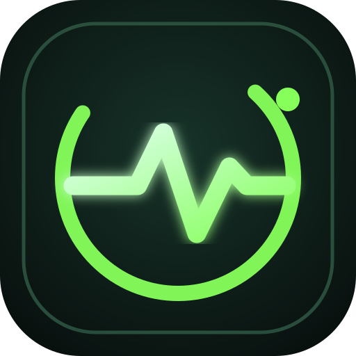

HEART RATE♡
— bpm
Latest record

PULSE.Sign in to access your personal PULSE data and keep your devices in sync.
Your health and activity, in one place.
An experimental estimate from your HRV and sleep trends, compared with your own baseline. Not a medical measure.
Add a measurement to start building your personal history.
PULSE is a personal tracking tool, not a medical device. It won't diagnose conditions or tell you whether you should train.
About your data ↗A clear view of your measurements over time.
Add consistent HRV and sleep records to build a personal trend.
Track your sleep duration and build a consistent history.
Log your sleep duration to see it here.
Your sleep history will appear here.
Sleep duration is only one part of sleep health. This app does not assess sleep disorders.
Keep a simple record of daily movement.
Record a daily step total to start your activity history.
Your daily totals will appear here.
Account access and platform activity. Personal health measurements are not shown here.
Loading account overview…
Blocking prevents future sign-ins. Existing sessions may remain valid until their access tokens expire. The master administrator account is protected from being blocked here.
Account access and platform activity. Personal health measurements are not shown here.
Loading account overview…
This panel shows account details and aggregate record counts only. It does not expose individual health measurements.
Preferences, privacy and app information.
Your entries are stored in your PULSE account and synced across your devices.
Cloud sync uses account-scoped access controls. Only your account can read your measurements.
Log Apple Health daily totals automatically using an iPhone Shortcuts automation.
Checking connection…
Save this key in your private Shortcut. It is shown only now; renewing it disables the previous key.
Independent wellness tracker prototype. Not a medical device.